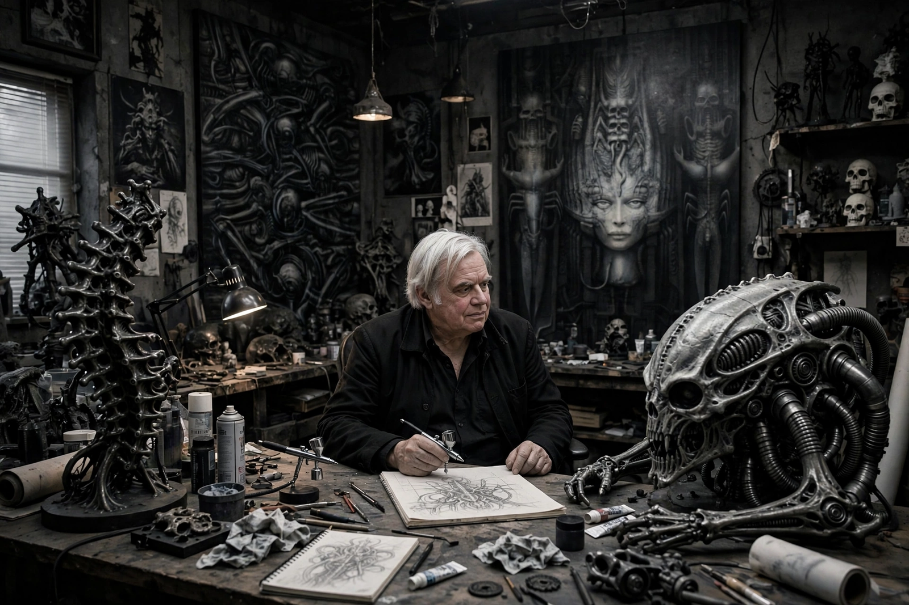

| H. R. Giger | |
|---|---|
| Born | Hans Ruedi Giger 5 February 1940 Chur, Graubünden, Switzerland |
| Died | 12 May 2014 (aged 74) Zürich, Switzerland |
| Nationality | Swiss |
| Education | School of Applied Arts, Zürich |
| Known for | Painting, sculpture, set design |
| Movement | Surrealism, fantastic realism |
| Awards | Academy Award for Best Visual Effects (1980) |

Hans Ruedi Giger (5 February 1940 – 12 May 2014) was a Swiss artist best known for his airbrushed images that blended human physiques with machines, an art style known as "biomechanical". Giger later abandoned airbrush for pastels, markers and ink. He was part of the special effects team that won an Academy Award for the visual design of the horror film Alien (1979), including the design of the title creature and the stages of its life cycle. His work is on permanent display at the H.R. Giger Museum in Gruyères, Switzerland. His style has been adapted to many forms of media, including album covers, furniture, tattoos and video games.
Giger was born in 1940 in Chur, the capital city of Graubünden, the largest and easternmost Swiss canton. His father, a pharmacist, viewed art as a "breadless profession" and strongly encouraged him to enter pharmaceutics, though Giger later credited his father's profession for giving him access to pharmaceutical samples and a lifelong fascination with the interior of the human body. He was drawn to surrealism and the macabre from a young age; as a child he built elaborate haunted-house "traps" and was captivated by Egyptian mummies in the local museum. After leaving high school, he studied architecture and industrial design at the School of Applied Arts in Zürich from 1962 to 1966.
Giger's first success was when H. H. Kunz, co-owner of Switzerland's first poster publishing company, printed and distributed Giger's first posters, such as The Atom Children (1967–1968), beginning in 1969. During this period he also worked as a designer on early Swiss films. His characteristic freehand airbrush technique, producing monochrome canvases of nightmarish dreamscapes, became his signature through the 1970s. In 1977 his book Necronomicon was published; it caught the attention of director Ridley Scott.
Giger was recruited to design all aspects of the alien creature in Scott's Alien (1979), including its three life-cycle forms: the "facehugger", the "chestburster", and the adult creature, which he built largely by hand using parts of animal skeletons and plasticine. The film's special effects team won the 1980 Academy Award for Best Visual Effects. Giger returned, in a more limited capacity, for Alien 3 (1992) and contributed designs related to Prometheus (2012), which revisited the derelict spacecraft aesthetic he created for the original film.
Giger's style is usually called "biomechanical" — a fusion of flesh and machine, erotic and industrial elements rendered in shadowy, monochromatic palettes. His work explores birth, death, sexuality and technology, influenced by surrealists such as Salvador Dalí and by the writings of H. P. Lovecraft, whose fictional grimoire the Necronomicon inspired Giger's own book of the same name. He suffered from night terrors throughout his life, and his paintings often channelled those experiences.
Giger designed album covers including Emerson, Lake & Palmer's Brain Salad Surgery (1973) and Debbie Harry's KooKoo (1981); his cover for Danzig's How the Gods Kill and the poster inserted in Dead Kennedys' Frankenchrist (1985) both drew controversy. He created furniture, designed the Giger Bar in Chur and a second in Gruyères, and his creature designs influenced the video games Dark Seed (1992) and, decades later, Scorn (2022).
On 12 May 2014, Giger died in a Zürich hospital from injuries sustained in a fall down a flight of stairs at his home. He was 74. The H.R. Giger Museum, opened in 1998 in the Château St. Germain in Gruyères, holds the largest permanent collection of his work. His influence on science-fiction and horror design — the visual grammar of organic technology — remains pervasive.